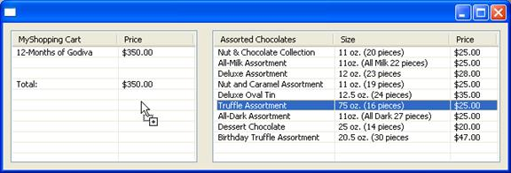

| Eclipse Corner Article |
Summary
Drag and drop provides a quick and easy
mechanism for users to re-order and transfer data within an application and
between applications. This article is an overview of how to implement Drag and
Drop and Clipboard data transfers within an SWT application.
By Veronika Irvine, IBM OTI Labs
August 25, 2003
Consider the simple example of dragging an item from one table to another as shown in Figure 1:

Figure
1: Shopping Cart example
On the right there is a list of items that I can purchase and on the left is my shopping cart. To buy something, I select it from the list on the right (I have selected “Truffle Assortment” in Figure 1), drag it over to my shopping cart and drop it. When I let go of the mouse over my shopping cart, the item will be added to the list of items I wish to purchase. In this data transfer, the list of assorted chocolates on the right is the drag source and my shopping cart is the drop target. A drag source is the source of the data being transferred and a drop target is the receiver. As I drag the mouse over a drop target, I get feedback in various forms. First, the cursor changes to let me know that I am over a valid drop target by changing from a “do not enter” sign to an arrow (this is called a “drag over effect”). The cursor also tells me what kind of operation will be performed when the data is transferred – the data may be copied or moved or a link may be made to the data. Secondly, if I am dragging over a widget that has sub-items like a tree or table, the sub-item may be highlighted to indicate that the data will be dropped on a specific sub-item (this is called a “drag under effect”). This is useful when you are organizing data into folders or rearranging items. In this article, I will explain in more detail the terms I have introduced above and explain how SWT allows an application to define and manipulate these components.
A drag source is the provider of data in a Drag and Drop data transfer as well as the originator of the Drag and Drop operation. The data provided by the drag source may be transferred to another location in the same widget, to a different widget within the same application, or to a different application altogether. For example, you can drag text from your application and drop it on an email application, or you could drag an item in a tree and drop it below a different node in the same tree.
Let us walk through a simple example showing how to define a drag source. The example in Listing 1 shows how to drag text from a label widget.
| 1 | import org.eclipse.swt.dnd.*; |
| 2 | |
| 3 | // Enable a label as a Drag
Source |
| 4 | final Label dragLabel = new Label(shell,
SWT.BORDER); |
| 5 | dragLabel.setText("text to be transferred"); |
| 6 | |
| 7 | // Allow data to be copied or moved
from the drag source |
| 8 | int operations = DND.DROP_MOVE |
DND.DROP_COPY; |
| 9 | DragSource source = new DragSource(dragLabel,
operations); |
| 10 | |
| 11 | // Provide data in Text
format |
| 12 | Transfer[] types = new Transfer[]
{TextTransfer.getInstance()}; |
| 13 | source.setTransfer(types); |
| 14 | |
| 15 | source.addDragListener(new DragSourceListener()
{ |
| 16 | public void dragStart(DragSourceEvent event)
{ |
| 17 | // Only
start the drag if there is actually text in the |
| 18 | // label - this text will be what is dropped on the
target. |
| 19 | if
(dragLabel.getText().length() == 0) { |
| 20 | event.doit
= false; |
| 21 | } |
| 22 | } |
| 23 | public void dragSetData(DragSourceEvent
event) { |
| 24 | // Provide
the data of the requested type. |
| 25 | if
(TextTransfer.getInstance().isSupportedType(event.dataType))
{ |
| 26 | event.data
= dragLabel.getText(); |
| 27 | } |
| 28 | } |
| 29 | public void dragFinished(DragSourceEvent
event) { |
| 30 | // If a
move operation has been performed, remove the data |
| 31 | // from
the source |
| 32 | if (event.detail ==
DND.DROP_MOVE) |
| 33 | dragLabel.setText(""); |
| 34 | } |
| 35 | } |
| 36 | }); |
Listing 1: Dragging text from a Label widget.
Line 1:
All the SWT drag and drop classes are defined
in the package org.eclipse.swt.dnd.
Lines 3 to 5:
Create a widget. In order to start a
drag, the user holds the mouse button down in a widget and drags the mouse. In
our example, the user starts the drag in the label. Note that you cannot have
multiple drag sources on one widget. If you try to create a second drag source,
an SWTError will be thrown.
Lines 7 to 9:
To make a widget into a drag source, we
must create an org.eclipse.swt.dnd.DragSource object. The DragSource constructor
takes two arguments, the widget that will be the location of the drag source and
the operations that are allowed. The allowed operations determine what kind of
actions the drop target can do with the data being transferred. The allowed
values are any bitwise OR combination of DND.DROP_COPY, DND.DROP_MOVE or
DND.DROP_LINK. In the example, we are allowing the data to be copied or
moved.
Lines 11 to 13:
To complete the definition of a drag
source, you must specify the types of data that can be transferred. A data type
is defined by a subclass org.eclipse.swt.dnd.Transfer such as TextTransfer or
FileTransfer. For a detailed description of Transfer types see Transfer.
A drag source can provide more than one format of the data, however, it is
required to provide the data in any of the specified formats when requested. In
this example, the user can drag text from the label.
Line 15:
Once the drag source is defined, a mechanism
is required for it to interact with the Drag and Drop operation. Adding a
DragSourceListener does this.
The following event sequences may occur:
Note: If an exception is thrown from a drag and drop event handler, on some platforms this will cause the entire windowing system to hang. Since this is extremely undesirable, SWT DND wraps all event listener code in an exception block. If your event handler throws an exception, no error will be reported and the DND operation will default to DND.DROP_NONE. This “silent” exception handling is a common reason why developers think that DND is not behaving correctly. It is recommended that you wrap your event handler code and catch any possible exceptions yourself and handle them appropriately. In future releases, we will try to come up with a better way to indicate that a failure has occurred.
Lines 16 to 22:
The dragStart event signals that the
user has performed the action that initiates a Drag and Drop operation. The
exact action taken by the user depends on the platform – on Windows for example,
the user presses down with the left mouse button and drags for a certain number
of pixels (the exact distance is configurable by the user in the Mouse control
panel). On Motif, the user presses down the middle mouse button. The application
does not need to be concerned about the exact conditions that started the
operation because SWT handles these platform differences. When the dragStart
event is received, the application has the choice to start a Drag and Drop
operation or not. For example, if no valid items are currently selected in the
drag source widget, the application may choose to cancel the operation. The
operation is cancelled by setting the event.doit field to ‘false’.
Note: the application is not required to specify the type of data that will be transferred until the dragStart event has been received. That is, the application can defer the call to DragSource.setTransfer until the dragStart event. However, once the dragStart event has been processed, if no transfer types have been specified for the drag source, the Drag and Drop operation will be cancelled.
By allowing the Drag and Drop operation, the application is making a promise to provide data of the specified type when requested. Failure to do so is a violation of the DND contract and could result in unexpected behavior.
Lines 23 to 28:
The dragSetData event is a request for
the data promised in the dragStart event. This event may be called multiple
times either repeatedly for the same data type or for any of the data types
promised. On some platforms, a potential drop target can request data when the
mouse is moving over the drop target (e.g. Windows) and on some platforms the
data may only be requested when a drop is performed (the mouse is released over
a valid drop site) (e.g. Motif). Therefore, do not make any assumptions that the
drag and drop operation is completed when receiving this event. There is no way
to know where the data is being dropped – it could be dropped on the same
application, even on the same widget or on another application.
The type of data being requested is specified in the event.dataType field. The event.dataType field contains a TransferData object. While the fields of the TransferData object are public, they are platform dependant. Therefore, you should not access the fields directly but rather pass the TransferData to a Transfer object to determine the type of data. This is done in the example by calling TextTransfer.getInstance().isSupportedType (line 25).
The drag source must fill in the event.data field. The exact form of the data depends on the Transfer type. For example, TextTransfer expects a String object containing the entire text whereas a FileTransfer expects a String array where each entry in the array is the absolute path of a File. The javadoc for each transfer type should describe the expected value for the Java object being transferred. More information on Transfer and TransferData is available in the Transfer section of this document.
Lines 29 to 34:
The dragFinished event indicates that
the drag and drop operation is complete. The user may have dropped the data on a
valid location, dropped the data on an invalid location or hit Escape. If the
user dropped the data on an invalid location or hit Escape, the event.doit field
will be false and the event.detail field will be DND.DROP_NONE. If the user
dropped the data on a valid location, the event.doit field will be true and the
event.detail field will indicate the kind of operation performed by the drop
target. This will be one of values specified in table 1.
| dragFinished event.detail value | Description |
|---|---|
| DND.DROP_COPY | The drop target made a copy of the data. |
| DND.DROP_LINK | The drop target made a link to the data – usually only used for files. |
| DND.DROP_MOVE | The drop target made a copy of the data and the drag source should now delete the original and update its display. |
| DND.DROP_TARGET_MOVE | The drop target moved the data from its original location to a new location. This is usually only used with files. In this case, the drag source does not need to delete the original; it just needs to update its display information. |
Table 1: Valid dragFinished event.detail values
A drop target receives data in a Drag and Drop operation. The data received by the drop target may have come from the same widget, from a different widget within the same application, or from a different application altogether. For example, you can drag text from an email application and drop it on your application, or you could drag an item in a tree and drop it below a different node in the same tree.
Let us walk through a simple example showing how to define a drop target. The example in Listing 2 shows how to drop files or text on a table widget.
| 1 | import org.eclipse.swt.dnd.*; |
| 2 | |
| 3 | // Enable a table as a Drop
Target |
| 4 | final Table dropTable = new Table(shell,
SWT.BORDER); |
| 5 | for (int i = 0; i < 10; i++) { |
| 6 | TableItem item = new
TableItem(dropTable, SWT.NONE); |
| 7 | item.setText("item" + I); |
| 8 | } |
| 9 | |
| 10 | // Allow data to be copied or moved
to the drop target |
| 11 | operations = DND.DROP_MOVE | DND.DROP_COPY |
DND.DROP_DEFAULT; |
| 12 | DropTarget target = new DropTarget(dropTable,
operations); |
| 13 | |
| 14 | // Receive data in Text or File
format |
| 15 | final TextTransfer textTransfer =
TextTransfer.getInstance(); |
| 16 | final FileTransfer fileTransfer =
FileTransfer.getInstance(); |
| 17 | types = new Transfer[] {fileTransfer,
textTransfer}; |
| 18 | target.setTransfer(types); |
| 19 | |
| 20 | target.addDropListener(new DropTargetListener()
{ |
| 21 | public void dragEnter(DropTargetEvent event)
{ |
| 22 | if (event.detail ==
DND.DROP_DEFAULT) { |
| 23 | if
((event.operations & DND.DROP_COPY) != 0) { |
| 24 |
event.detail = DND.DROP_COPY; |
| 25 | } else
{ |
| 26 |
event.detail = DND.DROP_NONE; |
| 27 |
} |
| 28 | } |
| 29 | // will
accept text but prefer to have files dropped |
| 30 | for (int i = 0; i <
event.dataTypes.length; i++) { |
| 31 | if
(fileTransfer.isSupportedType(event.dataTypes[i])){ |
| 32 |
event.currentDataType = event.dataTypes[i]; |
| 33 |
// files should only be
copied |
| 34 |
if (event.detail != DND.DROP_COPY) { |
| 35 |
event.detail = DND.DROP_NONE; |
| 36 |
} |
| 37 |
break; |
| 38 |
} |
| 39 | } |
| 40 | } |
| 41 | public void dragOver(DropTargetEvent event)
{ |
| 42 | event.feedback
= DND.FEEDBACK_SELECT | DND.FEEDBACK_SCROLL; |
| 43 | if
(textTransfer.isSupportedType(event.currentDataType)) { |
| 44 |
//
NOTE: on unsupported platforms this will return null |
| 45 | String t
=(String)(textTransfer.nativeToJava(event.currentDataType)); |
| 46 |
if (t != null)
{ |
| 47 |
System.out.println(t); |
| 48 |
} |
| 49 | } |
| 50 | } |
| 51 | public void
dragOperationChanged(DropTargetEvent event) { |
| 52 | if
(event.detail == DND.DROP_DEFAULT) { |
| 53 |
event.detail = (event.operations & DND.DROP_COPY) != 0) { |
| 54 |
event.detail = DND.DROP_COPY; |
| 55 |
} else { |
| 56 |
event.detail = DND.DROP_NONE; |
| 57 |
} |
| 58 | } |
| 59 | // allow text to be moved but files should only be
copied |
| 60 | if
(fileTransfer.isSupportedType(event.currentDataType)){ |
| 61 |
if (event.detail !=
DND.DROP_COPY) { |
| 62 |
event.detail
= DND.DROP_NONE; |
| 63 |
} |
| 64 | } |
| 65 | } |
| 66 | public void dragLeave(DropTargetEvent
event) { |
| 67 | } |
| 68 | public void dropAccept(DropTargetEvent
event) { |
| 69 | } |
| 70 | public void drop(DropTargetEvent
event) { |
| 71 | if
(textTransfer.isSupportedType(event.currentDataType)) { |
| 72 |
String text =
(String)event.data; |
| 73 |
TableItem item = new
TableItem(dropTable, SWT.NONE); |
| 74 |
item.setText(text); |
| 75 | } |
| 76 | if
(fileTransfer.isSupportedType(event.currentDataType)){ |
| 77 |
String[] files =
(String[])event.data; |
| 78 |
for (int i = 0; i <
files.length; i++) { |
| 79 |
TableItem
item = new TableItem(dropTable, SWT.NONE); |
| 80 |
item.setText(files[i]); |
| 81 |
} |
| 82 | } |
| 83 | } |
| 84 | }); |
Listing 2: Drop text or files on a table widget
Line 1:
All the related drag and drop classes are
defined in the package org.eclipse.swt.dnd.
Lines 3 to 8:
Create a widget. The user drags the data
over a target, which in user interface terms is some visible widget. In our
example, the user can drop the data on a table. Note that you cannot have
multiple drop targets on one widget. If you try to create a second drop target,
an SWTError will be thrown.
Lines 10 to 12:
Define the types of operations that
this drop target is likely to perform on any data dropped on it. This is a
bitwise OR combination of any of DND.DROP_COPY, DND.DROP_MOVE, or DND.DROP_LINK.
By default, if no operations are defined, the DND.DROP_MOVE operation is
assumed.
The operation may also include DND.DROP_DEFAULT (Note: the DND.DROP_DEFAULT style must be combined with one or more of the other DND.DROP_* styles). The DND.DROP_DEFAULT style allows the drop target to determine the default operation – the default operation is what happens when no modifier keys are pressed. If the DND.DROP_DEFAULT style is NOT specified, the default operation will be DND.DROP_MOVE. See also dragEnter and dragOperationChanged below.
Lines 14 to 18:
Define the types of data that this
drop target will accept. A data type is defined by a subclass
org.eclipse.swt.dnd.Transfer such as TextTransfer or FileTransfer. For a
detailed description of Transfer types see Transfer.
A drop target can be receptive to more than one type of data. The current 2.1
implementation will, however, only allow one format to be retrieved in the final
drop. That is to say, the drop target can indicate that it is interested in both
text and RTF text, but only one of these is provided in the drop event – either
text or RTF text. The advantage of registering for both formats is that some
applications may only provide text and some may only provide RTF text. If an
application provides both, you can choose which format you would prefer to
receive. See dragEnter below.
Line 20:
Once the drop target is defined, a mechanism
is required for it to interact with the Drag and Drop operation. Adding a
DropTargetListener does this.
Note: If an exception is thrown from a drag and drop event handler, on some platforms this will cause the entire windowing system to hang. Since this is extremely undesirable, SWT DND wraps all event listener code in an exception block. If your event handler throws an exception, no error will be reported and the DND operation will default to DND.DROP_NONE. This “silent” exception handling is a common reason why developers think that DND is not behaving correctly. It is recommended that you wrap your event handler code and catch any possible exceptions yourself and handle them appropriately. In future releases, we will try to come up with a better way to indicate that a failure has occurred.
The following event sequences may occur:
*may be a mixture of dragOver and dragOperationChanged
Line 21 to 40:
The dragEnter event occurs when a drag
and drop operation is in progress and the cursor enters the bounds of the drop
target widget. If the cursor leaves the bounds of the widget and re-enters,
another dragEnter is issued.
Lines 22 to 28:
A drag over effect is a visual cue to
the user about what kind of operation will be performed when the drop occurs.
The exact appearance of the visual cue is platform dependant – some examples are
shown in Figure 2. The drop target can update this drag over effect by setting
the event.detail field to one of DND.DROP_COPY, DND.DROP_MOVE, DND.DROP_LINK or
DND.DROP_NONE. The value set in the event.detail field must be one of the values
defined in the event.operations field, which is a bitwise OR of the operations
supported by the DragSource. If a value is chosen that is not allowed by the
DragSource, the operation would be set to DND.DROP_NONE. The event.detail field
can also be updated in the dragOver, dragOperationChanged, dropAccept and drop
events.
In dragEnter, the application can define the default operation. As discussed above, if the drop target is created with the style DND.DROP_DEFAULT, it will be notified when there are no user modifier keys pressed. In this case, the event.detail field in the dragEnter event is set to DND.DROP_DEFAULT. The application can specify the default operation by changing the event.detail field to the desired operation. If the application does not change the event.detail field from DND.DROP_DEFAULT to some operation, it will by default be changed to DND.DROP_MOVE. The DND.DROP_DEFAULT value is also set in the dragOperationChanged event.
In our example, we make Copy the default operation if it is allowed by the drag source.
|
Operation |
Win32 cursor |
|---|---|
| Move | |
| Copy | |
| Link | |
| None |
Figure 2: Cursors for the allowed transfer operations
Lines 29 to 39:
The drop target can choose what type
of data it would prefer to receive. The dragEnter event has two fields for this,
event.currentType, which is the type of data preferred by the application
(represented by a TransferData object), and event.dataTypes, which is the list
of types provided by the drag source (represented by an array of TransferData
objects). You can set the event.currentType to any value in the event.dataTypes.
These fields can also be modified in the dragOver, dragOperationChanged, and
dropAccept events.
In the example, we are allowing Text or Files to be dropped on the table, but if both are available, we prefer to get the Files. If a file is being transferred, we also have restricted the operation to allow only copy (we don’t want you to delete files from your operating system when you play with this example:)).
Lines 41 to 50:
The dragOver event occurs repeatedly
as the user drags the cursor over the drop target widget. If the cursor is
motionless, the dragOver event will continue to be received at regular
intervals. In addition to what is shown in the example, you can modify the
event.detail or event.currentType fields. This is most often done with a table
or tree when the operation changes based on what item you are over. For example,
you may have a tree representing the file system and you may allow files to be
dropped on folders but not on other files. The event.item field will indicate
what item you are over in a table or tree.
Line 42:
A drag under effect is some visual cue or
action in the drop target widget that gives the user more detailed feedback
about where the drop may occur. The application can control the drag under
effect by setting the event.feedback field as shown in Table 2.
| dragOver event.feedback values | Description |
|---|---|
| DND.FEEDBACK_SELECT | The item under the cursor is selected; applies to table and trees. |
| DND.FEEDBACK_SCROLL | The widget is scrolled up or down to allow the user to drop on items that are not currently visible; applies to tables and trees. |
| DND.FEEDBACK_EXPAND | The item currently under the cursor is expanded to allow the user to select a drop target from a sub item; applies to trees. |
| DND.FEEDBACK_INSERT_BEFORE | An insertion mark is shown before the item under the cursor; applies to tables and trees. |
| DND.FEEDBACK_INSERT_AFTER | An insertion mark is shown after the item under the cursor; applies to tables and trees. |
| DND.FEEDBACK_NONE | No effect is shown. |
Table 2: drag under effect types
Lines 43 to 49:
When dragging data over the target,
the information provided in the event tells you what type of data is being
dragged but does not give the content of the data. For example, the
event.currentType may indicate that a file is being dragged but the event does
not indicate the name of the file or the extension of the file. If your
application will perform a different operation for a Java file versus a text
file, then you might want to get the data in the dragOver event. Unfortunately
this is not supported on all platforms. As of 2.1, it is only possible to access
the data in the dragOver event on Windows. The data can be accessed by passing
the event.currentType TransferData object to the nativeToJava method of the
corresponding Transfer object. On all platforms except Windows, this will return
null. In the future, this capability may be extended to other platforms where
supported.
(Note: in 1.0 through 2.1, you can only get the data for event.currentType but in 3.0, you can get the data for any type in event.dataTypes).
Lines 51 to 65:
The dragOperationChanged event occurs
when the user presses or releases a modifier key (such as Ctrl, Shift, Command,
Option). The modifier keys are used to switch the operation to be performed. For
example, on Windows when just the Ctrl key is down, a copy is requested, when
the Ctrl and Shift keys are both down, a link is requested and when just the
Shift key is down, a move is requested. When no modifier keys are pressed, the
default operation is requested. See the dragEnter event for more details.
Lines 66 to 67:
The dragLeave event occurs when the
cursor moves outside of the drop target widget. If you allocated any resources
in dragEnter, you should free them in dragLeave. The dragLeave event also occurs
if the user cancels the Drag and Drop operation by hitting Escape, and just
before a drop is performed.
Lines 68 to 69:
The dropAccept event provides the
application with one last chance to define the type of data that will be
returned in the drop event. This is done by setting the event.currentDataType to
one of the values defined in event.dataTypes.
Lines 70 to 83:
The drop event occurs when the user
releases the mouse over the drop target if a valid operation and currentDataType
were requested in the previous events. The event.data field contains the data
requested. The object type contained in the event.data field depends on what
Transfer type was requested. The data is of the type defined in the
event.currentDataType field.
When the drop operation is completed, update the event.detail field with the operation performed.
Drag and drop allows the simultaneous transfer of data between a source and a target but sometimes the user may wish to copy data to be transferred at a later point in time. The Clipboard acts like a temporary holder for the data. In addition, the same data may be copied to multiple targets using the clipboard.
In the following example, we will copy data in two different formats onto the clipboard and retrieve one of the formats from the clipboard.
| 1 | import org.eclipse.swt.dnd.*; |
| 2 | . . . |
| 3 | public static void main(String[] args) { |
| 4 | Display display = new
Display(); |
| 5 | final Clipboard cb = new
Clipboard(display); |
| 6 | Shell shell = new
Shell(display); |
| 7 | final Text text = new Text(shell,
SWT.BORDER | SWT.MULTI); |
| 8 | text.setBounds(10, 10, 300,
300); |
| 9 | Button button = new Button(shell,
SWT.PUSH); |
| 10 | button.setText("Copy"); |
| 11 | button.setBounds(320, 10, 100,
40); |
| 12 | button.addListener(SWT.Selection, new
Listener() { |
| 13 | public void
handleEvent(Event e) { |
| 14 |
String textData =
text.getSelectionText(); |
| 15 | if
(textData == null) return; |
| 16 |
// to show the rtf
formatting, make the text bold and italic |
| 17 |
String rtfData = "{\\rtf1 \\b\\i " +
textData + "}"; |
| 18 |
TextTransfer textTransfer =
TextTransfer.getInstance(); |
| 19 |
RTFTransfer rtfTransfer =
RTFTransfer.getInstance(); |
| 20 |
Transfer[] types = new Transfer[]
{textTransfer, rtfTransfer}; |
| 21 |
cb.setContents(new Object[] {textData,
rtfData}, types); |
| 22 | } |
| 23 | }); |
| 24 | button = new Button(shell,
SWT.PUSH); |
| 25 | button.setText("Paste"); |
| 26 | button.setBounds(320, 60, 100,
40); |
| 27 | button.addListener(SWT.Selection, new
Listener() { |
| 28 | public void
handleEvent(Event e) { |
| 29 |
TextTransfer transfer =
TextTransfer.getInstance(); |
| 30 |
String data =
(String)cb.getContents(transfer); |
| 31 |
if (data ==
null)return; |
| 32 |
text.insert(data); |
| 33 | } |
| 34 | }); |
| 35 | shell.open(); |
| 36 | while (!shell.isDisposed()) { |
| 37 | if
(!display.readAndDispatch()) |
| 38 |
display.sleep(); |
| 39 | |
| 40 | } |
| 41 | cb.dispose(); |
| 42 | display.dispose(); |
| 43 | } |
Listing 3: Using the clipboard to copy text
Line 1:
All the related drag and drop classes are
defined in the package org.eclipse.swt.dnd.
Line 5:
Create a clipboard object. A Clipboard object
gives you access to the operating system clipboard. It will allow you to
exchange data within your application or with other applications. Note: A
Clipboard object uses system resources and must be released when you are
finished (see line 41). You can choose to create a new clipboard object each
time you want to access the data on the clipboard or you can keep an instance
around for your application.
Lines 14 to 21:
Copy the text selected in the Text
widget onto the clipboard. If no text is selected, do nothing.
When placing data on the clipboard, it is possible to make the data available in more than one format. In our example, we are using both Text and RTF Text formats. This makes it possible for our application to interact with a larger variety of applications. That is, if we only place RTF text on the clipboard, then we cannot interact with an application such as Notepad that does not understand RTF text. To better integrate your application into the environment, make your data available in as many useful forms as possible.
Each successful call to Clipboard.setContents will clear any previous content from the clipboard. This applies not only to the data formats you are placing on the clipboard but to all data formats. For example, if the clipboard contains File data placed there by some other application and you call Clipboard.setContents with Text data, the File data will no longer be available. If you want to have multiple kinds of data available on the clipboard at the same time, you must pass them to the clipboard in the same Clipboard.setContents call. The Clipboard.setContents API takes an array of data objects and an array of data types. The values for the data objects must be in the same order as the data types and must be valid for the corresponding data type (that is, a TextTransfer expects a String, a File Transfer expects a String[] - the javadoc for each type should specify the expected format of the data).
The data that you place on the clipboard will be available even after your application is closed. (Note: GTK is an exception to this. Currently, there is no mechanism in GTK to persist the data beyond the life time of the application.)
On some platforms, there are actually multiple clipboards available. On Unix/Linux there is a PRIMARY clipboard which is supposed to contain the data that was most recently selected (implicitly set by the act of selection) and there is a CLIPBOARD clipboard which is supposed to contain data that was explicitly set through a keyboard accelerator (such as CTRL+Insert) or through a menu item (there are also other clipboards but these are used infrequently). In Motif, only the CLIPBOARD Clipboard is supported by SWT. In GTK, SWT has rudimentary support for both clipboards; when you call Clipboard.setContents, the data will be placed on both the PRIMARY and the CLIPBOARD clipboards. In the future, this support should be expanded to Motif and to support the implicit style . On the Mac, SWT supports the default Scrap.
Lines 29 to 32:
If there is Text available on the
clipboard, insert it into the text widget.
To request data of a certain type, call Clipboard.getContents with a Transfer subclass of the appropriate type. In our example, we are pasting Text and have used the TextTransfer class. If there is no data of this type available, null will be returned. The type of object returned by Clipboard.getContents will depend on the Transfer class used. The javadoc for the Transfer subclass should specify the Java object type.
On GTK, the SWT implementation looks for a matching data value first in the CLIPBOARD clipboard and then in the PRIMARY clipboard. On Motif, the SWT implementation only looks for a match in the CLIPBOARD clipboard.
Line 41:
Dispose of the clipboard. As mentioned above,
failure to dispose the clipboard will result system resources being leaked.
In 2.1 and earlier releases of SWT, the only mechanism available to determine if a specific data type is available on the clipboard is to use Clipboard.getContents and actually transfer the data. In addition to being slow, this mechanism can cause problems when a "Cut" operation is being performed. In a "Cut" operation, one application puts data on the clipboard and when that data is transferred from the clipboard, the original copy of the data is deleted. In 3.0, there will be new API to query what types of data are on the clipboard without actually transferring the data to your application. An example of how to use it is shown in Listing 4.
| 1 | TransferData[] available =
cb.getAvailableTypes(); |
| 2 | boolean enabled = false; |
| 3 | for (int i = 0; i < available.length; i++)
{ |
| 4 | if
(TextTransfer.getInstance().isSupportedType(available[i])) { |
| 5 |
enabled = true; |
| 6 |
break; |
| 7 | } |
| 8 | } |
| 9 | pasteMenuItem.setEnabled(enabled); |
Listing 4: Query the data types available on the clipboard.
Clipboard.getAvailableTypes returns an array of TransferData objects. A TransferData object contains platform specific information that represents a data type. While the fields of the TransferData object are public, do not attempt to interpret them directly. Instead use the "isSupportedType" method of any subclass of Transfer as shown in line 4.
Transfer is an abstract class that provides a mechanism for converting between a Java representation of data and a platform specific representation of data and vice versa. The Java representation of the data is the currency the application uses. For example, text is represented by a String object. The platform specific representation is the currency of the operating system and is represented in SWT by the TransferData object. Table 3 shows the subclasses of Transfer provided in org.eclipse.swt.dnd.
| Transfer | Java format | Example |
|---|---|---|
TextTransfer |
String |
"hello world" |
RTFTransfer |
String |
"{\\rtf1\\b\\i hello world}" |
FileTransfer |
String[] |
new String[] {file1.getAbsolutePath(),
file2.getAbsolutePath()} |
Table 3: Transfer types provided by SWT
The TransferData class contains public fields that are platform-specific. Because the fields in TransferData vary from platform to platform, applications should not access them. The purpose of making the fields public is to allow developers to extend the Transfer class and provide additional platform specific types for data transfer (e.g., bitmap images or wave files).
This article describes the SWT mechanism for transferring data either via Drag and Drop or using the Clipboard. SWT uses the underlying operating system mechanism which allows data transfer across applications for maximum system integration. SWT provides standard data transfer types as well as an infrastructure for defining your own transfer types or supporting additional platform-defined data types.
Java and all Java-based trademarks and logos are trademarks or registered trademarks of Sun Microsystems, Inc. in the United States, other countries, or both.